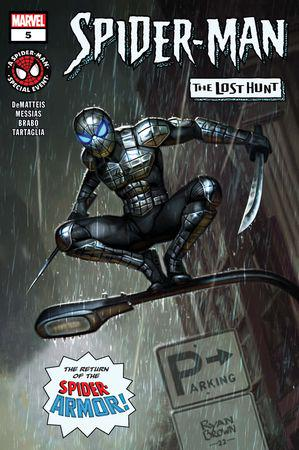
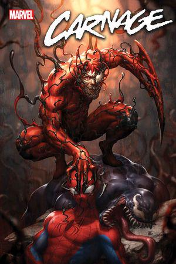
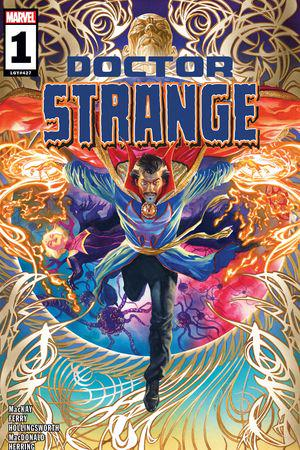
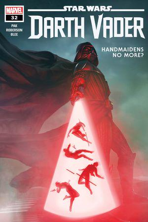
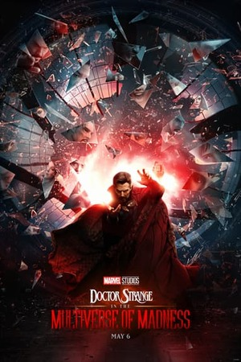
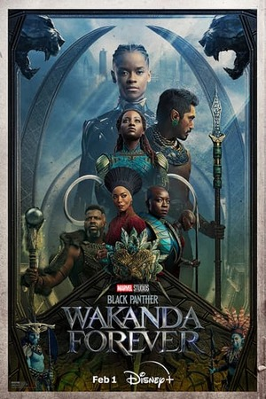
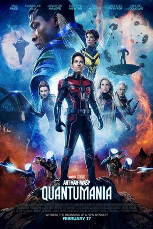

 Spider-Man: The Lost Hunt #5
J.M. DeMatteis, Messias
 Carnage #11
Paknadel, Roge Antonio
 Doctor Strange #1
Mackay, Ferry
 Star Wars: Darth Vader #32
Pak, Roberson
El Dr. Stephen Strange abre un portal al multiverso al utilizar un hechizo prohibido. Ahora, su equipo debe enfrentarse a una amenaza que podría destruirlo todo.

Tras la muerte de T'Challa, la reina Ramonda, Shuri, M'Baku, Okoye y las Dora Milaje protegen Wakanda de la injerencia de las potencias mundiales.

Los superhéroes Scott y Cassie Lang, Hope van Dyne y sus padres, se encuentran accidentalmente atrapados en el reino cuántico y deben enfrentarse a un nuevo enemigo, Kang el Conquistador.
 Titan Books y Marvel Studios celebran el comienzo de las películas ‘ Infinity Saga ’
Titan Books está colaborando con Marvel Studios para conmemorar el 15 aniversario del nacimiento del Universo Cinemático Marvel Saga infinita! A partir de este junio, Titan Books volverá a emitir un conjunto revisado de edición de coleccionista de los 24 libros de arte publicados originalmente para acompañar las películas, comenzando con Marvel Studios' Iron Man, la película que lo comenzó todo.
Los libros serán reeditados en el mismo orden en que se publicaron originalmente, comenzando con Iron Man: el arte de la película, fuera 27 de junio de 2023, y terminando con Marvel's Vengadores: Fin del juego: El arte de la película en 2025.